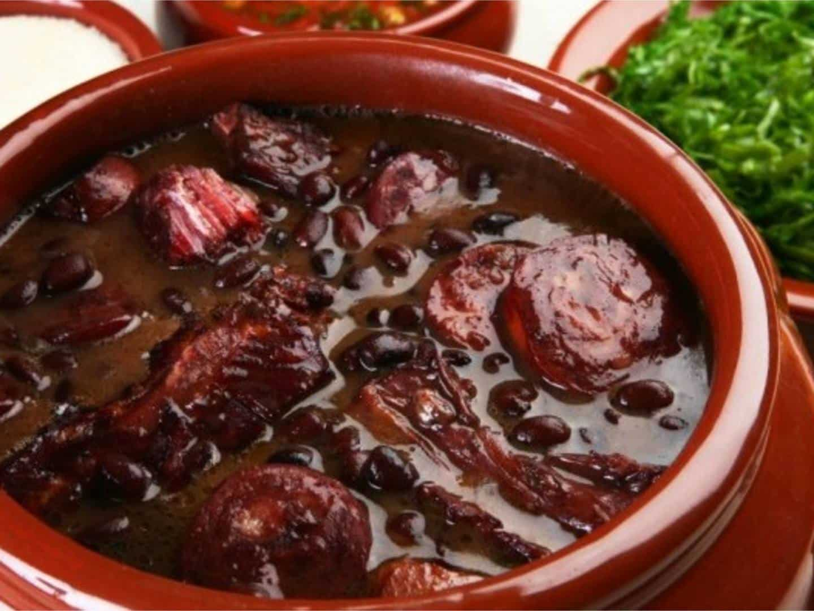

Feijoada

Description:
Feijoada is a traditional Brazilian stew made with black beans and a variety of meats, typically including pork, beef, and sausages. It is slow-cooked to develop rich flavors and is often served with rice, collard greens, orange slices, and farofa (toasted cassava flour). Feijoada is considered a national dish of Brazil and is commonly enjoyed during gatherings and celebrations, reflecting the country’s culinary heritage.
Ingredients:
- Black beans;
- Pork meat;
- Onion;
- Garlic;
- Bay leaves;
- Smoked paprika.
Steps:
- Prepare the Beans: Rinse the soaked black beans and drain them. Set aside;
- Brown the Meats: In a large pot or Dutch oven, cook the bacon over medium heat until crispy. Remove and set aside.
In the same pot, brown the pork and beef in batches until nicely seared. Remove and set aside;
- Sauté Aromatics: Add the chopped onions to the pot and sauté until translucent.
Stir in the minced garlic and cook for an additional minute until fragrant;
- Combine Ingredients: Return the browned meats and bacon to the pot. Add the soaked black beans, bay leaves, smoked paprika (if using), and enough water or broth to cover the ingredients by about an inch;
- Simmer: Bring the mixture to a boil, then reduce the heat to low. Cover and let it simmer for 2-3 hours, stirring occasionally. Add more water if necessary to keep it from drying out;
- Add Sausages: About 30 minutes before the feijoada is done, slice the smoked sausage and add it to the pot. Continue simmering until all meats are tender and the flavors meld;
- Season and Serve: Taste and adjust seasoning with salt and pepper. Remove bay leaves before serving.
Serve the feijoada hot over rice, with collard greens, orange slices, and farofa on the side.
Enjoy your hearty and flavorful feijoada!